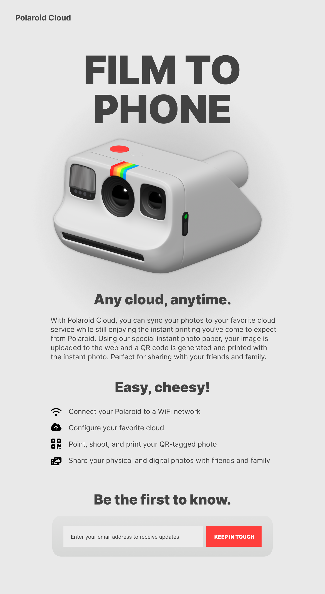

5.5 Lab Assignment
5.5 Lab: Polaroid Cloud
In this lab you'll re-create a Figma design for a fictitious Polaroid product called "Polaroid Cloud." You'll need to use your knowledge and research skills to complete the unfinished parts not covered in the videos.
Lab Objectives
- Create a new 11ty site with a focus on reusable components. Use CSS and 11ty features to help "DRY" (Don't Repeat Yourself) up your markup and style.
- Use CSS custom properties to create reusable components and rules within you CSS file.
- Use 11ty partials and templates to create custom cards with minimal repeated HTML and CSS.
Client Design Notes
Figma files and other resources to help you with this lab can be found in the "5.4 Additional Resources" section of this module.

Lab Requirements
The goal of this lab is to give you one more practice build using 11ty before we move into our more advanced JavaScript work. We're still going to be doing HTML and CSS, but our focus will be on front-end frameworks like React, Alpine, and HTMX. Use this as an opportunity to practice your skills around building out front-ends based on design assets/Figma files and separating reusable components into templates, layouts, and custom properties.
- Create a new base 11ty site starting from Jeff's GitHub 11ty Boilerplate. Make sure you create a new repository based on the template repo (see first video): https://github.com/jsiarto/11ty-boilerplate(this link opens in a new window/tab)
- Using your knowledge of HTML and CSS (and your MDN docs, of course) recreate the design above as closely as possible. Reference the videos to get you started.
- Use CSS Custom Properties for values that need to be reused throughout (colors, fonts, sizing, etc).
- The final site must make use of at least one 11ty layout file for the main HTML headers and footers, and a partial/template for the planet cards.
- Your site should be published to Netlify and public links from GitHub and Netlify should be submitted to D2L.
- Submit your public URLs to the 5.5 Lab Assignment dropbox.